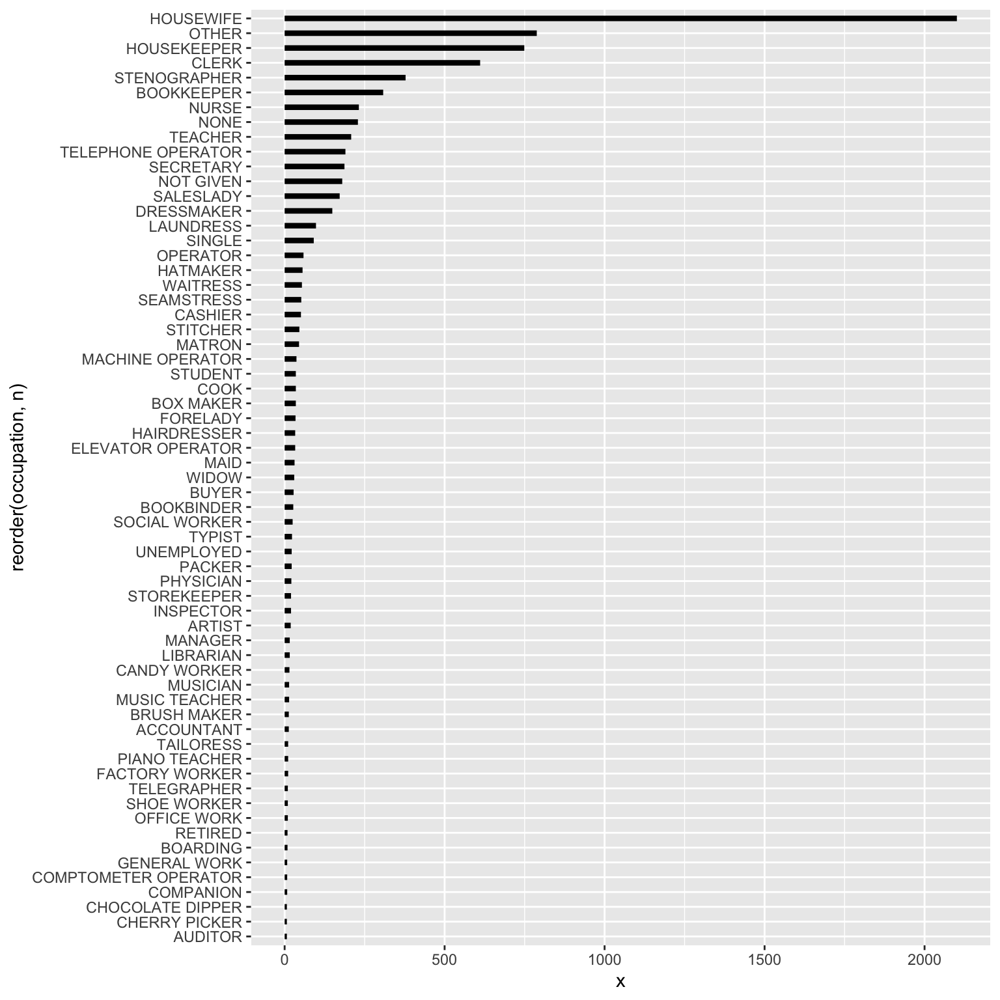
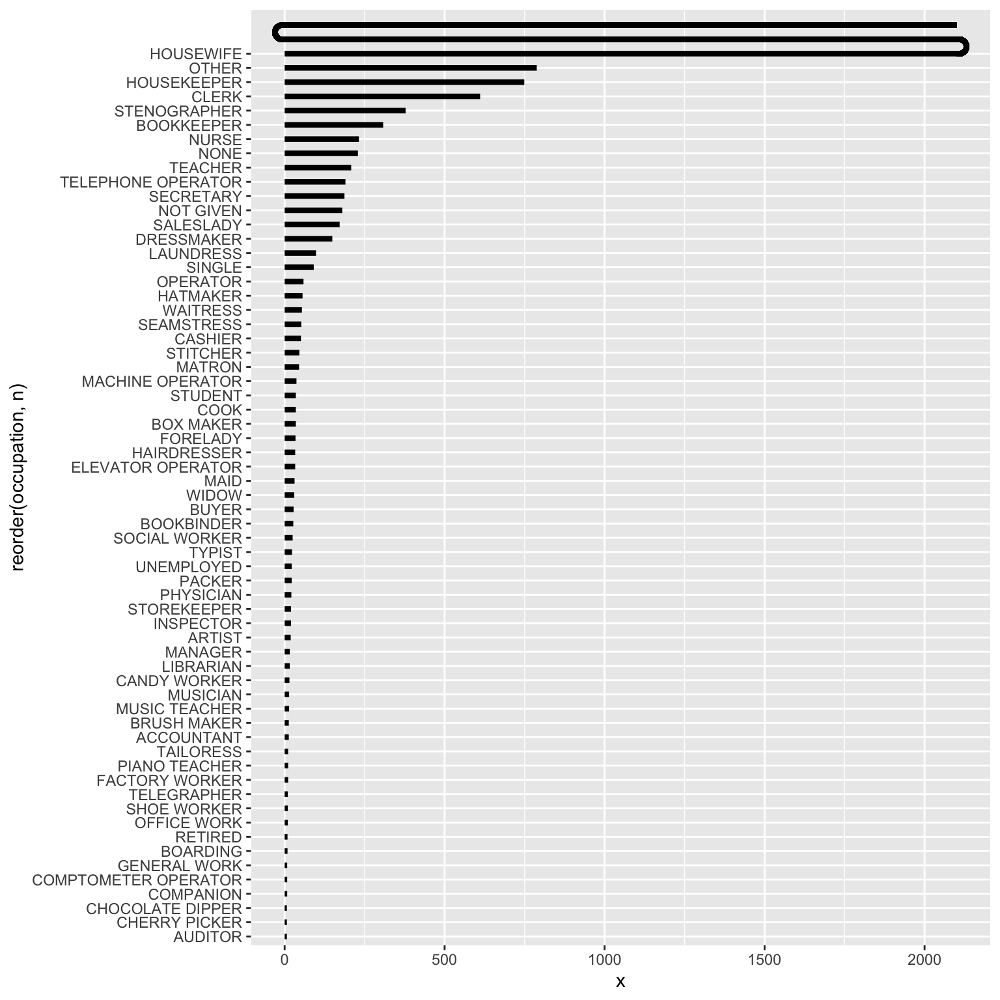

I became aware of the city of Bostons Mary Eliza project through the Data is Plural newsletter. The Mary Eliza project is transcribing 160 handwritten volumes of the General Registers of Women Voters from the City of Boston in 1920, and making all this data available to the public. This is such a rich and fascinating data set to look into! Here, I examine the reported jobs of these women, and through that I attempt to give some insight into what life was like for these women, more than 100 years ago.
Get the data and setting up
Ill be using the tidyverse package:
Would you like to follow along? You can download the data yourself from the project website. Note that this dataset is updated continuously, so the dataset may have expanded since I downloaded it (January 18th 2023). I have the exact data I used on my GitHub repo, in case you want to make sure you have the same data. All the code for this project is also on GitHub.
To begin with, Ill load the data and clean the column names.
voters_raw <- read.csv("https://raw.githubusercontent.com/emmaSkarstein/visualization_projects/master/Women_voters/womens-voter-registers.csv")
voters <- voters_raw %>%
janitor::clean_names()Considerations in grouping the occupations
So what I really want to look closer at for this project are the recorded occupations. We can do a quick count of the top ones:
occupation n
1 Housewife 3939
2 At home 715
3 Housekeeper 598
4 Clerk 455
5 Stenographer 330
6 housewife 286
7 Bookkeeper 218
8 At Home 207
9 None 207
10 Housework 203
11 <NA> 180
12 Married, Housewife 158
13 Teacher 156
14 Secretary 154
15 Nurse 143Just like with the countries, I already see some things I would like to clean up here, but we need to be careful to not make incorrect assumptions when working on this historical data. However, there are some things I think we can safely assume. Lets print out a longer list of just the occupations without the counts to get a better idea of what we will need to do:
occupations[1:100, 1] [1] "Housewife" "At home"
[3] "Housekeeper" "Clerk"
[5] "Stenographer" "housewife"
[7] "Bookkeeper" "At Home"
[9] "None" "Housework"
[11] NA "Married, Housewife"
[13] "Teacher" "Secretary"
[15] "Nurse" "H.W."
[17] "Dressmaker" "at home"
[19] "Saleslady" "Telephone Operator"
[21] "Married" "Single"
[23] "Married\nHousewife" "Laundress"
[25] "clerk" "married, housewife"
[27] "Operator" "Waitress"
[29] "housewife, married" "Cashier"
[31] "Domestic" "Milliner"
[33] "Matron" "house-wife"
[35] "Seamstress" "Stitcher"
[37] "Tel. operator" "House-wife"
[39] "Student" "Telephone operator"
[41] "Cook" "at Home"
[43] "Widow" "Maid"
[45] "School teacher" "Married, housewife"
[47] "Saleswoman" "Forelady"
[49] "Book-keeper" "Elevator operator"
[51] "none" "Book keeper"
[53] "housekeeper" "Packer"
[55] "Typist" "Machine operator"
[57] "stenographer" "Artist"
[59] "Hairdresser" "Inspector"
[61] "Social worker" "unemployed"
[63] "Bookbinder" "married, Housewife"
[65] "Buyer" "Manager"
[67] "Box maker" "House-keeper"
[69] "Librarian" "nurse"
[71] "Physician" "saleslady"
[73] "Accountant" "bookkeeper"
[75] "Graduate nurse" "house keeper"
[77] "School Teacher" "dressmaker"
[79] "married" "Musician"
[81] "Trained nurse" "Bookeeper"
[83] "laundress" "Storekeeper"
[85] "Boarding" "Tailoress"
[87] "Bank clerk" "Box Maker"
[89] "Companion" "Housewife, Married"
[91] "Lodging house keeper" "Machine Operator"
[93] "Music teacher" "Private secretary"
[95] "Retired" "Shoe worker"
[97] "teacher" "Auditor"
[99] "Brushmaker" "Cherry picker" There are some things to note here:
- Compound words: bookkeeper vs book keeper vs book-keeper, the same goes for a few other words, house keeper, book binder, house wife, etc.
- Capitalization: At home vs at home
- Abbreviations: tel. operator, h.w.
- woman versus lady: saleslady vs saleswoman, and some other titles as well
- maker versus making: any occupation ending with -making typically also had some cases of being specified with -making instead, e.g dressmaker vs dressmaking
The above list is pretty much just a question of spelling, and I dont think Im making any bold assumptions when I change these to be consistent. However, there are some other changes I am a bit less certain about that I will nonetheless make for the sake of my visualization:
- Married or not? In many cases, they have married as a part of their occupational status, which isnt relevant for my purpose. However, what does it mean if they only have married listed as their occupation? I have grouped this together with housewife, which I think is ok, but I might be wrong.
- A housewife in other words: In addition to grouping married and all the various spellings of housewife as housewife, Im also assuming that at home and house work means the same thing. However, the way I understand it housekeeper is not the same, as they are someone doing house work in someone elses home.
- A housekeeper in other words: I also grouped domestic together with housekeeper.
- Nurses: There are a few different titles related to nurses. I made a decision to group together everything with the word nurse, though this is likely removing some nuances. Since the numbers are fairly small I feel it was ok.
- Clerks: The same goes for anything clerk-related.
In order to make all these groupings and adjustments, I used the case_when() function from dplyr:
occupations_clean <- voters %>%
mutate(occupation = tolower(occupation), # everything lowercase
occupation = gsub("-", "", occupation), # remove all hyphens
occupation = gsub("\\[|\\]", "", occupation), # remove all brackets
occupation = case_when(
is.na(occupation) ~ "Not given",
grepl("(hous.*wife)|(h. ?w)|(at home)|(^married$)|(house.*work)|(^home$)",
occupation) ~ "housewife",
grepl("(telephone)|(tel. operator)|(^.?phone)", occupation) ~ "telephone operator",
grepl("(^m.*ch.*operat)|(operator machine)", occupation) ~ "machine operator",
grepl("switch.*board", occupation) ~ "switchboard operator",
grepl("(dress).*(mak)", occupation) ~ "dressmaker",
grepl("sten", occupation) ~ "stenographer",
grepl("boo.*keep", occupation) ~ "bookkeeper",
grepl("(house.*keep)|(domestic)", occupation) ~ "housekeeper",
grepl("book.*binder", occupation) ~ "bookbinder",
grepl("box.*maker", occupation) ~ "box maker",
grepl("brush.*maker", occupation) ~ "brush maker",
grepl("nurse", occupation) ~ "nurse",
grepl("store.*keeper", occupation) ~ "storekeeper",
grepl("(( )|^)(hair)", occupation) ~ "hairdresser",
grepl("telegraph", occupation) ~ "telegrapher",
grepl("candy", occupation) ~ "candy worker",
grepl("sales", occupation) ~ "saleslady",
grepl("laund", occupation) ~ "laundress",
grepl("fore", occupation) ~ "forelady",
grepl("(office work)|(office assistant)", occupation) ~ "office work",
grepl("piano", occupation) ~ "piano teacher",
grepl("school.*teacher", occupation) ~ "teacher",
grepl("buyer", occupation) ~ "buyer",
grepl("compt", occupation) ~ "comptometer operator",
grepl("secretary", occupation) ~ "secretary",
grepl("(^sew)|(seamstress)", occupation) ~ "seamstress",
grepl("(milliner)|(hat)", occupation) ~ "hatmaker",
grepl("elevator", occupation) ~ "elevator operator",
grepl("physician", occupation) ~ "physician",
grepl("cler", occupation) ~ "clerk",
TRUE ~ occupation),
occupation = fct_lump_min(occupation, min = 7),
occupation = toupper(occupation)
) %>%
count(occupation, sort = TRUE) %>%
mutate(order = 1:nrow(.))This was very good practice in regular expressions! My workflow for discovering all the necessary changes and how to capture them as concisely as possible in a regular expression consisted of both manual searches in View() in RStudio, as well as lots of testing in (regex101.com)[regex101.com] (what an amazing resource!). I would write a list of all the various spellings of an occupation in regex101.com, and then try to come up with an appropriate regular expression to capture all of them. I havent worked a ton with regular expressions before, so I suspect that some of these could have been done better, but I definitely learned quite a bit from this. It was always a challenge to make sure not to include something by mistake, for instance I thought I would just search for anything containing hair and recode that as hairdresser, but just searching for hair would also select chairwoman, which was not what I wanted!
I also made the decision to group together all the occupations that came up six times or less into other. Though they were definitely interesting to look at! I for sure think it is possible to group the occupations a bit more, I put more than 500 unique entries into my other category, but after scrolling through them I think I at least managed to pick out the ones that would make a significant impact in my visualization.
A preliminary bar chart
I decided early on that I wanted to make this into a bar chart to make the sizes of the different occupations clear. But a simple bar-chart of this would look something like this:
ggplot(occupations_clean, aes(x = n, y = reorder(occupation, n))) +
geom_col() +
theme_minimal()This is fine, but the size of the housewife category kind of masks the other categories. Is there some way of shifting the focus to the other categories while still displaying the size of the housewife-category? This made me think of some of the visualizations by W.E.B Du Bois, where I remembered seeing a bent bar chart, similar to a normal bar chart but with one of the bars being folded.
A bent bar chart!
When I looked it up I found that Du Bois has a few different data portraits of this type, for instance Plate 17 and Plate 26, shown below. Note that Plate 26 also displays occupations!


Figure 1: caption
There is, as far as I know, no built-in way to do this in ggplot2. Originally I was thinking it would be really cool to break the bar and then let it go downwards at 90 degrees, maybe even breaking again towards the bottom, almost like a frame. Byt since the y-axis here is different from the x-axis, I would need to be very careful that the length was correct, and I think that will need to be a project for another time. To keep it manageable this time I decided to bend the bar 180 degrees.
To make the curve itself, I used geom_curve():
ggplot() +
geom_curve(aes(x = 1, y = 1, xend = 1, yend = 1+1),
curvature = 1.4, linewidth = 10) +
theme_minimal()It took some tweaking to find the correct curvature to make the transition between the curve and the bar look smooth, but evetually curvature = 1.4 seemed to do the trick.
I decided to break the housewife-bar into three. So first, I need to find the length of each of the sub-segments by just dividing the total number in three. I also actually make this the number of housewives in the occupations_clean data set, so the first bar will be generated the same way as all the other bars, and then I add the two other sub-sections with geom_segment().
n_housewives <- occupations_clean[1, 2] %>% as.numeric()
n_housewives_div3 <- round(n_housewives/3)
occupations_clean[1, 2] <- n_housewives_div3 # Change the number of housewives to a third.
n_occs <- nrow(occupations_clean) # Number of occupations
bar_width <- 1.5 # Width of the bars
# Adding this in order to place the text correctly later on:
occupations_clean$text_position_y <- n_occs - (occupations_clean$order-1)
occupations_clean$text_position_y[1] <- n_occs + 2To make everything look the same I actually use geom_segment() for all the normal bars as well instead of geom_col(). So, our initial plot with only the normal bars looks like this:
occupations_plot <- ggplot(occupations_clean) +
geom_segment(aes(x = 0, xend = n,
y = reorder(occupation, n), yend = reorder(occupation, n)),
linewidth = bar_width)
occupations_plot
Though here the housewives-bar is actually just a third of what it should be. I then add the curves and segments, and expand the y-axis so the bent bar will be visible:
occupations_plot <- occupations_plot +
# Bottom curve, right side
geom_curve(aes(x = n_housewives_div3, y = n_occs, xend = n_housewives_div3, yend = n_occs+1),
colour = "black", curvature = 1.4, linewidth = bar_width) +
# Middle segment
geom_segment(aes(x = n_housewives_div3, xend = 0, y = n_occs+1, yend = n_occs+1),
linewidth = bar_width) +
# Top curve, left side
geom_curve(aes(x = 0, y = n_occs+1, xend = 0, yend = n_occs+2),
colour = "black", curvature = -1.4, linewidth = bar_width) +
geom_segment(aes(x = n_housewives_div3, xend = 0, y = n_occs+2, yend = n_occs+2),
linewidth = bar_width) +
scale_y_discrete(expand = expansion(mult = c(0.01, .05)))
occupations_plot
Nice! That wasnt too tricky! Now for adding annotations, and beautifying everything.
I want to highlight some of the bars for emphasis, in this case I prefer doing that by defining a separate color column in the dataset.
library(showtext)
showtext_auto()
showtext_opts(dpi = 300)
f1 <- "Cabin" # Title font
f2 <- "Cabin" # Body text font
font_add_google(name = f1, family = f1)
font_add_google(name = f2, family = f2)
col_text <- "#191919"
col_bg <- "#f9f9f7"
ggplot(occupations_clean) +
# Main bars
geom_segment(aes(x = 0, xend = n,
y = reorder(occupation, n), yend = reorder(occupation, n),
color = I(bar_color)),
linewidth = bar_width) +
# Bottom curve, right side
geom_curve(aes(x = n_housewives_div3, xend = n_housewives_div3,
y = n_occs, yend = n_occs+1,
color = col_housewife),
curvature = 1.4, linewidth = bar_width) +
# Middle segment
geom_segment(aes(x = n_housewives_div3, xend = 0,
y = n_occs+1, yend = n_occs+1,
color = col_housewife),
linewidth = bar_width) +
# Top curve, left side
geom_curve(aes(x = 0, xend = 0,
y = n_occs+1, yend = n_occs+2,
color = col_housewife),
curvature = -1.4, linewidth = bar_width) +
geom_segment(aes(x = n_housewives_div3, xend = 0,
y = n_occs+2, yend = n_occs+2,
color = col_housewife),
linewidth = bar_width) +
scale_y_discrete(expand = expansion(mult = c(0.01, .05))) +
# Number labels
geom_text(aes(x = n + 30, y = text_position_y, label = n), hjust = 0,
size = 2, family = f2, color = col_text) +
# Add a little buffer of each side of the x-axis
scale_x_continuous(limits = c(0, 2300), expand = expansion(mult = c(0.01, 0))) +
# Don't remove stuff outside the border of the plot
coord_cartesian(clip = "off") +
annotate(geom = "text", x = 2300, y = 48, hjust = 1, family = f1, face = "bold", color = col_text, size = 6,
label = "CHERRY PICKERS\n AND CHOCOLATE DIPPERS") +
annotate(geom = "text", x = 2300, y = 42, hjust = 1, family = f1, color = col_text, size = 3,
label = "The most common occupations among 11992 of the first\n women who signed up to vote in Boston in 1920.") +
labs(caption = "Graphics: Emma Skarstein | Source: The Mary Eliza Project") +
theme_minimal() +
theme(text = element_text(size = 20, family = f2, color = col_text),
plot.caption = element_text(size = 6, family = f2, color = col_text),
axis.text.y = element_text(size = 6, color = col_text),
axis.title = element_blank(),
axis.text.x = element_blank(),
panel.grid = element_blank(),
panel.background = element_rect(fill = col_bg, color = col_bg),
plot.background = element_rect(fill = col_bg, color = col_bg),
plot.margin = margin(20, 20, 20, 20))
Appendix: Some other exploration of the data
This is such a rich dataset, I wanted to take a quick look at some of the other information there as well.
Birth countries
First of all, I would definitely recommend just scrolling through this dataset, I could spend hours just looking at all the individual entries!
We can also do some simple summaries, for example, what are the birth countries of these women?
country_of_birth n
1 United States 9559
2 Canada 823
3 Ireland 780
4 England 213
5 Russia 102
6 <NA> 98
7 Italy 77
8 Scotland 77
9 Sweden 67
10 Germany 62
11 Norway 17
12 British West Indies 16
13 France 15
14 Austria 8
15 Denmark 8Unsurprisingly a majority is born in the US, but there are quite a few immigrants as well. We can print all of them without the counts to save space:
countries[,1] [1] "United States" "Canada"
[3] "Ireland" "England"
[5] "Russia" NA
[7] "Italy" "Scotland"
[9] "Sweden" "Germany"
[11] "Norway" "British West Indies"
[13] "France" "Austria"
[15] "Denmark" "Belgium"
[17] "Switzerland" "Wales"
[19] "Poland" "West Indies"
[21] "[Canada]" "Armenia"
[23] "Azores" "China"
[25] "Danish West Indies" "Finland"
[27] "Great Britain" "Holland"
[29] "Nova Scotia" "Portugal"
[31] "Russian Poland" "South Wales"
[33] "Turkey" "[see note]"
[35] "Armenia (Turkey)" "At sea"
[37] "Austria Czechoslovakia" "Austria Hungary"
[39] "Bohemia" "Chile"
[41] "Cuba" "German"
[43] "Hungary" "Jamaica"
[45] "Lithuania" "Massachusetts"
[47] "Newfoundland" "North Germany"
[49] "Northern Ireland" "Norway Sweden"
[51] "Poland-Russia" "Romania"
[53] "Russia Poland" "South Africa"
[55] "Spain" "Syria"
[57] "Untied States" "Vermont" Interesting! If we were to do some analysis based on this I think we could do some further cleaning here, though we need to be careful about making assumptions when working with historical data. For instance, I was thinking that I would change Newfoundland to Canada, but turns out Newfoundland wasnt a part of Canada until 1949! Also, Norway separated from Sweden in 1905, but the one person who wrote Norway Sweden as their country of birth was probably born before then, when they were still a union. Also, apparently Vermont was its own republic from 1777 to 1791, but Im guessing this person wasnt born in that time period. Maybe it was a political statement? But I suppose we could assume that Russian Poland, Russia Poland and Poland-Russia are referring to the same place?
Popular and rare names
I also think name trends are really interesting, so I am curious about the most popular names:
names <- voters %>%
separate(name, into = c("first", "rest"), sep = "\\s", extra = "merge") %>%
count(first, sort = TRUE)
head(names, n = 10) first n
1 Mary 1618
2 Margaret 614
3 Elizabeth 436
4 Annie 403
5 Catherine 340
6 Alice 295
7 Helen 292
8 Anna 271
9 Sarah 206
10 Ellen 191These are maybe not so surprising. We can look at a sample of the least common names:
set.seed(1920)
special_names <- names %>% filter(n == 1)
random_rows <- sample(1:nrow(special_names), size = 100)
special_names[random_rows, 1] [1] "Chrystal" "Susanne" "Avis" "Harriott"
[5] "Youtha" "Lorenna" "Florance" "Nichols"
[9] "[Nano]" "Carmela" "Orrie" "Rowena"
[13] "Lorana" "Imogen" "Hanorah" "Alvania"
[17] "Missouri" "Palmira" "Jessemine" "Audrey"
[21] "Juliet" "Reyda" "Winnie" "Mignonette"
[25] "Campbell" "Neotah" "Catharin" "Bride"
[29] "Nicoline" "Margarite" "Corilla" "[Malhilata?]"
[33] "Eloise" "Ursuline" "Abigale" "Vyola"
[37] "Loulie" "Lotty" "Letha" "Freda"
[41] "Mal" "Jenette" "Lera" "Albena"
[45] "Latitia" "E.D." "Argentina" "Aimee"
[49] "Mannie" "Hilma" "Robena" "Olie"
[53] "Alethia" "Minne" "Mahala" "Tema"
[57] "Vena" "Patty" "Katheryne" "Hilla"
[61] "Nanie" "Seraph" "Georgette" "Cera"
[65] "Luzerne" "Vida" "Metta" "Elinore"
[69] "Beissie" "Beata" "Rosabelle" "Stephanie"
[73] "Ermina" "India" "Minnia" "Monica"
[77] "Tena" "Yettie" "Lovetta" "Eulalie"
[81] "Tryphena" "Meta" "Raffaelle" "Leta"
[85] "Matildia" "Clifford" "[Mattie]" "Eleanore"
[89] "Louies" "Mercy" "Diana" "Pearle"
[93] "Henny" "Elberta" "Filomena" "Hila"
[97] "Wanda" "Tillie" "Bluette" "Eleana" I love this! I suspect some of these may be misspelled, but that is just the joy of historical data.